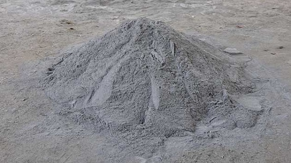

Contribuir con el cuidado del agua desarrollado tecnologías verdes basadas en zeolitas.
Ecozeolitas tiene como objetivo la producción de zeolitas usando materiales renovables, específicamente cenizas volantes, las cuales provienen de las plantas carboeléctricas. El mercado al que está dirigido este producto es a nivel industrial, sin embargo el impacto que tendrían sus beneficios sería a nivel público. Nuestros principales clientes serían las tratadoras municipales y estatales de agua (Aguas de Saltillo, Servicios de Agua y Drenaje de Monterrey, Comisión de Agua y Alcantarillado, entre otras), así como las tratadoras privadas de agua industrial o de productos como embotellado de agua.
Zeolitas con capacidad de absorción mayor que las actuales en el mercado
Obtenida a partir de subproductos abundantes y de muy bajo costo, generados por la industria regional
Es reciclable y como consecuencia de esto su tiempo de vida media se incrementa
El filtro de zeolita también puede ser usado como filtro para gas butano